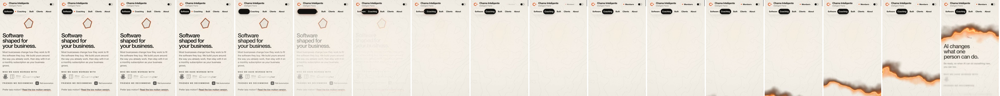
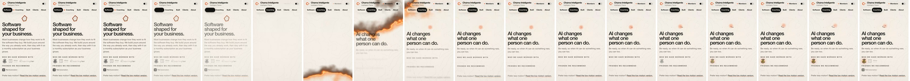
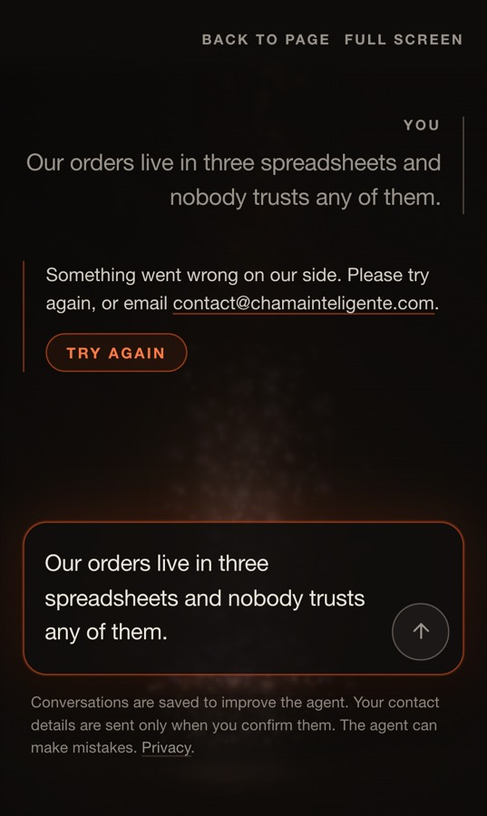
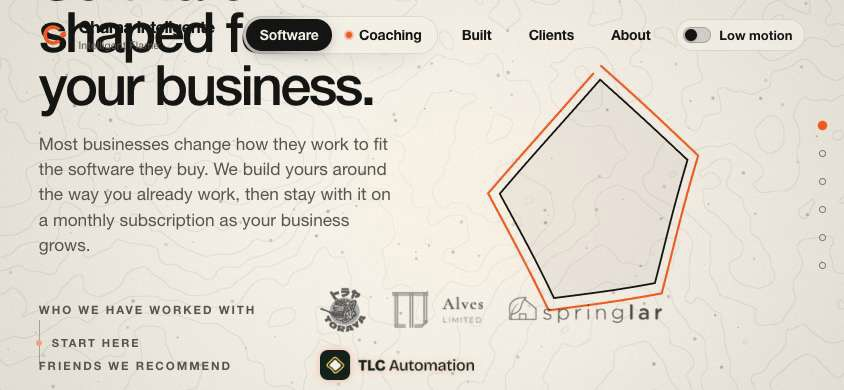
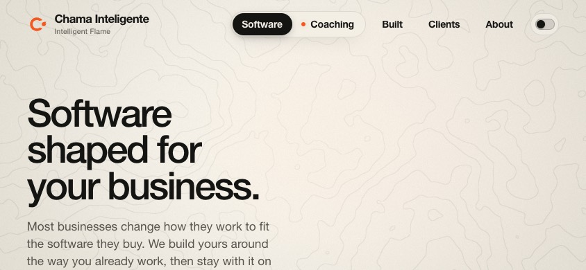
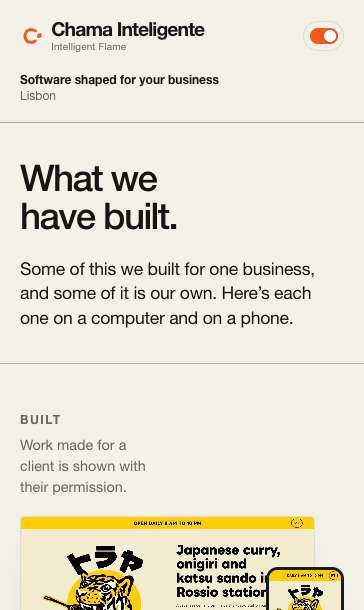
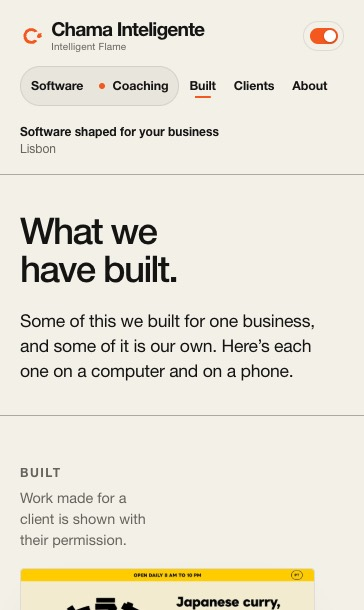
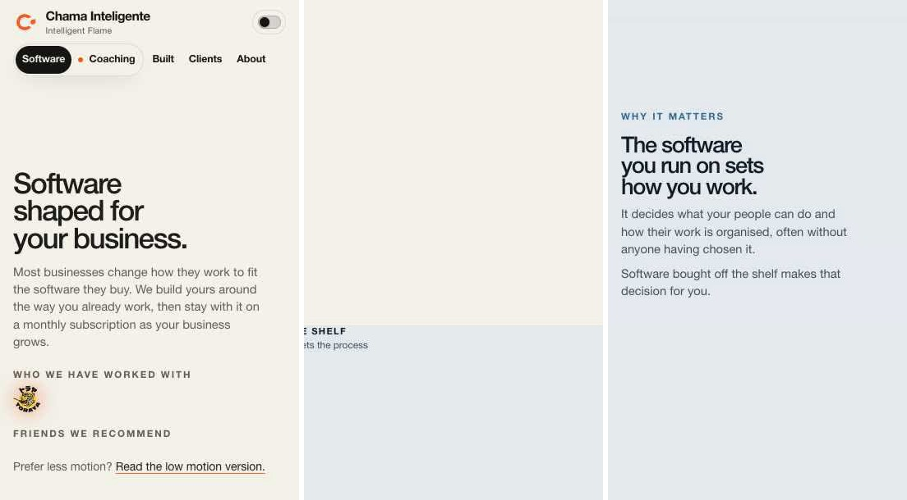
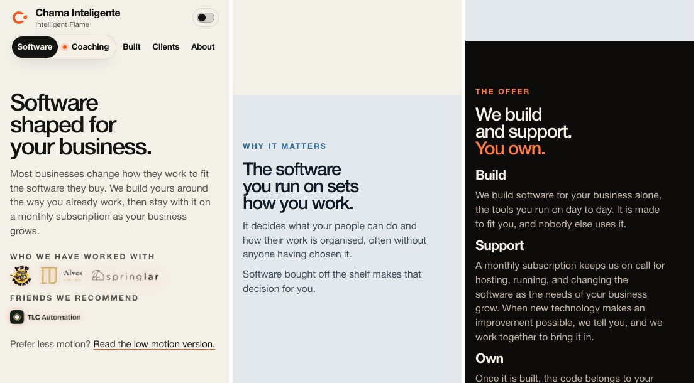

chamainteligente.com was audited four ways, rebuilt by Opus agents working in parallel, reviewed, shipped, then measured again in production against the old code.
Live in production4 pull requests merged762 tests pass6 calls waiting on you
2.7 s/built on a phone, largest paint. Was 4.7 s
0scripts and styles re-fetched on a repeat visit. Was up to 13
0 pxof dead scroll at the end of /built. Was 324 px on your phone
72 fpsscrolling /built on a 6x slowed phone. Was 55
BuildSix streams in separate worktrees, then asset versioning
ReviewDesign, code and security on the merged branch
ShipCache headers proven on the preview, then production
Re-measureOld and new code alternated run by run
Fix againWhat the re-measure caught, shipped the same day
Before and after
/built, largest paintphone, slow 4G
before4680 ms
after2668 ms
Home, largest paintdesktop
before2432 ms
after232 ms
/coaching, largest paintphone, slow 4G
before3260 ms
after1796 ms
/built, page weightphone
before719 KB
after342 KB
/simple/built, page weightdesktop
before1170 KB
after144 KB
Members' sign-in formphone, slow 4G, on production
before3240 ms
after2143 to 2485
Header link to a settled pagepage already fetched, phone
before1.5 to 1.6 s
after1.1 to 1.2 s
Browser Backto a settled page
before1.9 to 2.2 s
after1.07 to 1.18 s
/built, style work per scroll framephone slowed 6x
before7.31 ms
after1.75 ms
Dead scroll at the end of /builtyour phone size; desktop was 585 px
before324 px
after0 px
Load numbers are medians of three cold loads against production. Frame and input numbers come from the old tree (41d9f03) and the new one run back to back on the same machine, which was busy all day, so anything inside the run-to-run spread was left out. First paint did not change on any page.
What you can see
Page change, Software to Coaching your phone size, a frame every 100 ms. The heading is readable at about 0.8 s, was 1.6 s
Before

After

A failed chat reply the message comes back, the line is readable, and Try again is one tap
BeforeAfter

A phone held sideways the headline sat under the header; now the worlds become one column
Before

After

Low-motion pages the five pages are now at the top, the current one marked
Before

After

JavaScript off screens of empty colour became one column of sections
Before

After

Also changed and not pictured: the /built progress bars now work, every control has a pressed state, a slow page fetch shows on the header and a hung one gives up after 8 seconds, members download only the parts of the room they can use, and the page prints.
What the checks caught after shipping
Sideways phone: links landed at the topThe one-column layout has no pinned positions. One function now decides where a link lands. 36 of 36 cases pass.
Sideways phone: /clients had no logosA rule for JavaScript-off also hit short screens. The wheel now lies flat, each logo beside its client.
The pentagon rode up under the headerA misplaced condition lifted every figure with its leaving world. One line.
Words blinked out as a world leftFound by the design review before shipping. The fade now runs over at least 15% of the screen.
404 page shifted on loadIt lacked a one-line head script the other pages have. Layout shift is 0 again.
Scrolling the word-heavy pages cost moreCause found by bisecting: a shade had made whole worlds restyle every frame. Back to the old cost at 4x. At 6x three pages are still 0.1 to 0.5 ms a frame above it (production had been 1.3 to 1.8 above).
/clients re-downloaded logos on arrivalThree fetches became one. The last is Toraya's larger copy.
Older bugs fixed on the wayFront logo on the phone wheel blocked taps on its neighbours (62 of 708 taps missed, now 0). The dissolve into the low-motion pages was sometimes skipped. A blank page on Back after a full reload. One test file had never been run.
Your Gmail address in the old Alves pictureRecaptured without it. The old file now returns 404. It remains in git history.
Yours to decide
The flame while a reply streamsOn a 120 Hz touch screen it now draws 60 times a second to hold the page's frame rate. Unchanged at rest. Look at it on your Android phone; it is one named value.
The opening of /builtAbout 75vh after the header settles where nothing answers the scroll, longer than the pause you named. The idea is to let Toraya's pictures start moving under the opening words.
"The work" on /clientsThe scroll cue looks left over from the /work rename. Not reworded.
/simple/coaching's mastheadIts note reads "Software shaped for your business" on the coaching page.
The new Alves pictureShows today's app with a seeded price, €576 for 18 shirts. The Vivir Sin Fronteras pictures show Lucas Alves signed in.
"Page not found." in the HearthA member opening a room their role does not load used to read "You do not have access to this page."
Not verified on real hardware: momentum scrolling and the soft keyboard on a phone. Everything here was measured in desktop Chrome emulating one. Pull requests: #184, #185, #186, #187.